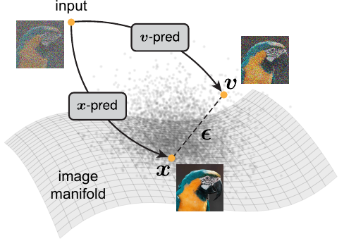
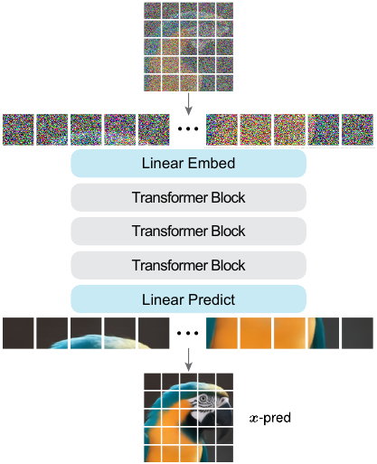
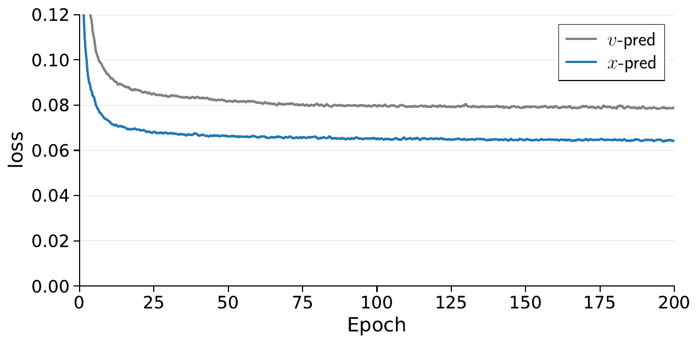
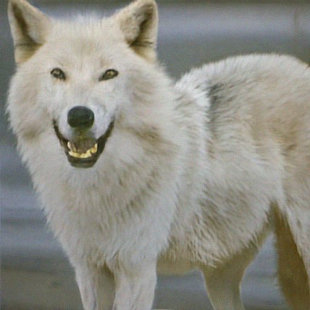
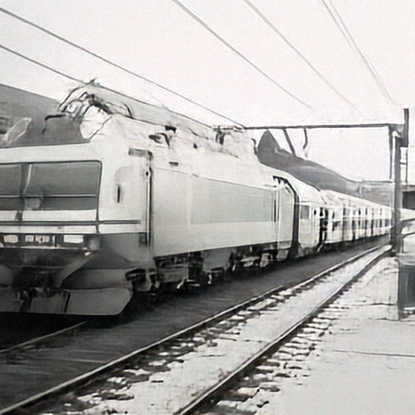

An interactive explainer
Back to Basics: Let Denoising Generative Models Denoise
The diffusion model you have today does not denoise. It predicts noise. That sounds like a quibble until you remember the manifold assumption: clean images live on a thin, low-dimensional surface, while noise smears across the full pixel space. Predict noise and your network has to reproduce something off-manifold with the full dimensionality of the ambient space. Predict the image and it only has to land back on the manifold. Tianhong Li and Kaiming He revive that distinction, throw out the VAE, drop pre-training, and feed raw pixel patches directly into a plain ViT. The result: FID 1.82 on ImageNet 256×256 and 1.78 on 512×512, with no tokenizer, no perceptual loss, no DINOv2 alignment — competitive with everything that does use those things.

Open any modern diffusion paper from the last five years and you'll find a curious detail: the network almost never predicts a clean image. It predicts noise. Or velocity. Or some other linear combination of the clean image and the noise that was added to it. Then a transformation, applied at inference, converts that prediction back into a step toward a clean image.
This wasn't always the case. The original DDPM paper considered all three options — predicting the clean image $x$, predicting the noise $\varepsilon$, predicting velocity $v = x - \varepsilon$ — and empirically settled on noise prediction because it gave noticeably lower FID. Flow matching later shifted to velocity prediction. Together, these two choices won. Today, "diffusion model" basically means "neural network that predicts something that isn't the clean image."
Li and He's claim is that this won by accident. The original argument was that the three parameterizations are mathematically related by reweighting the loss, so the choice "doesn't really matter" — and on the small, low-dimensional datasets where that was tested (CIFAR-10, low-res latent codes), it really doesn't. But it does matter, dramatically, the moment you try to denoise raw high-resolution pixels. There the choice of prediction target is the difference between an FID of 8.6 and an FID of 372.
The fix is the simplest thing imaginable. Use a plain Vision Transformer. Feed it raw image patches (no VAE, no tokenizer). Have it predict the clean image. Train for 600 epochs. Done. The whole architecture, including bells and whistles, fits comfortably on one page. The authors call it JiT, for "Just image Transformers." It beats every previous pixel-space diffusion model and matches the latent-space ones — without the latent space.
1. The manifold picture
Here is the entire conceptual content of the paper in two sentences. Natural images live on a low-dimensional manifold inside a high-dimensional ambient space. Random Gaussian noise does not — by definition, an isotropic Gaussian fills the ambient space in every direction.
A $256 \times 256$ RGB image lives in $\mathbb{R}^{196{,}608}$. But the photograph of a Labrador is not a generic point in that space. Move 5% of the way toward a random Gaussian vector in $\mathbb{R}^{196{,}608}$ and the result is not "5% noisy Labrador" — it is unrecognizable static. The space of plausible images is unfathomably thin: a 196,608-dimensional needle thrown into a 196,608-dimensional haystack. The manifold dimensionality of real-image distributions is widely believed to be in the hundreds, maybe low thousands. Not 200,000.
Now ask: what is harder for a finite-capacity neural network to output? A point on the thin manifold, where most of the 196,608 coordinates are determined by the few hundred "true" degrees of freedom? Or a point sampled uniformly from $\mathbb{R}^{196{,}608}$, where every coordinate carries independent information? Manifold learning has answered this for forty years. The first one is much easier. The second requires the network to faithfully transmit the full high-dimensional input.
This widget lets you feel the asymmetry. The blue curve is a 1-D manifold inside 2-D space — think of it as a stand-in for "the manifold of natural images" inside "the ambient space of all pixel arrays." The clean data point $x$ sits on the curve. The noise vector $\varepsilon$ is sampled uniformly in 2-D and lives anywhere. The interpolant $z_t = t\,x + (1{-}t)\,\varepsilon$ is what the diffusion model sees during training. Drag the time slider and watch what happens.
The arrow shows what the network has to output given $z_t$ as input. For $x$-prediction, the output target is a point on the blue curve — a 1-dimensional set. For $\varepsilon$-prediction, the target is a point that can be anywhere in $\mathbb{R}^2$ — a 2-dimensional set. For $v$-prediction, the target is $x - \varepsilon$, also anywhere in $\mathbb{R}^2$ because of the noise term.
Read that again. The exact same input, $z_t$, has to map to three different things depending on which parameterization you picked. And two of those three live in a higher-dimensional output space than the third. If your network has limited capacity — which all networks do — that difference is the entire ball game.
2. Three spaces, nine combinations
Flow matching and diffusion can both be written as the same forward process. Sample a clean image $x \sim p_\text{data}$ and noise $\varepsilon \sim \mathcal{N}(0, I)$, and form a linear interpolant between them:
$$ z_t \;=\; t \, x \;+\; (1 - t)\, \varepsilon, \qquad t \in [0, 1]. $$
At $t{=}1$, you have the clean data; at $t{=}0$, pure noise. The flow velocity, the time derivative of $z_t$ along this path, is:
$$ v \;=\; \frac{d z_t}{d t} \;=\; x - \varepsilon. $$
Given these two constraints, knowing any one of $\{x, \varepsilon, v\}$ determines the other two. So there are three valid quantities for the network to predict ($x$, $\varepsilon$, or $v$) and three valid spaces to measure the loss in ($\|\hat x - x\|^2$, $\|\hat\varepsilon - \varepsilon\|^2$, or $\|\hat v - v\|^2$). That's nine possible combinations. They are all mathematically legitimate generative models. They are all related by reweighting and linear transformations of the network output.
The widget below is an interactive version of the paper's Table 1. Click any cell to see the formula that turns the chosen network output into the loss in the chosen reference space. Then toggle the colored badge underneath to see the actual FID numbers from JiT-B/16 on ImageNet 256 — where six of these nine "mathematically equivalent" combinations fail catastrophically in practice.
Note the green-vs-red asymmetry. The columns control which quantity the network outputs directly; the rows control which space the loss is measured in. Catastrophic failure tracks the column, not the row. In other words: what the network predicts is what matters; how you reweight the loss only moves things around within a column.
Earlier work by Salimans & Ho (2022) ran this same enumeration on CIFAR-10 with a U-Net. They found that 8 of the 9 combinations worked fine. Loss weighting matters a little; prediction target doesn't seem to matter much. Why didn't that result hold up here? Because CIFAR-10 is $32 \times 32$, and with a U-Net's downsampling the effective per-token dimensionality is small. The information bottleneck never gets squeezed. The disease was hidden, not absent.
3. The toy experiment
Before showing this on ImageNet, Li and He construct a minimal toy that isolates the variable. Take genuine 2-D data — a spiral, drawn nicely in $\mathbb{R}^2$. Now pick a random column-orthogonal projection matrix $P \in \mathbb{R}^{D \times 2}$ and lift the spiral into $\mathbb{R}^D$. The true data is still 2-D — it's just been embedded into a higher-dimensional ambient space. Train a small generative MLP (5 layers, 256-dim hidden units) to model this $D$-dim distribution, using $x$-, $\varepsilon$-, or $v$-prediction. The matrix $P$ is hidden from the model; we only use it to project generated samples back to 2-D for visualization.
The interactive below lets you walk through the four cases the paper reports: $D = 2, 8, 16, 512$. The ground truth is always the same spiral. The three generators are trained identically except for the prediction target.
At $D = 2$, all three parameterizations work — there's no manifold-vs-ambient gap, and the MLP has plenty of capacity. By $D = 16$, the $\varepsilon$- and $v$-prediction models are visibly degrading. At $D = 512$ — where the underlying data is still a 2-D spiral, just buried in a 512-dimensional space — only $x$-prediction recovers it. The other two models collapse, because the 256-dim hidden MLP literally cannot reproduce a 512-dimensional Gaussian: it's an under-complete network receiving a higher-dimensional target than it can route.
This is the paper's whole story in one figure. Predicting noise in a $D$-dim space is a $D$-dim regression problem. Predicting clean data on a $d$-dim manifold is, at best, a $d$-dim regression problem — even if you have to express the answer using $D$-dim coordinates. The intrinsic difficulty depends on what you're predicting, not on how the loss is weighted.
4. JiT: just image Transformers

The architecture is the boring one. A ViT divides an image into non-overlapping $p \times p$ patches, flattens each to a $p \cdot p \cdot 3$-dim vector, linearly embeds them, processes the sequence with Transformer blocks, and linearly decodes each token back to a $p \cdot p \cdot 3$-dim patch. Time and class label are injected via adaLN-Zero, exactly as in the original DiT. That's it.
The configuration choices that make this work at high resolution are:
- Aggressive patch sizes. JiT/16 ($p{=}16$) on $256{\times}256$ images gives a 16×16 sequence with $16 \cdot 16 \cdot 3 = 768$ raw values per patch. JiT/32 on $512{\times}512$ gives the same 16×16 sequence with 3072 values per patch. JiT/64 on $1024{\times}1024$ gives 12,288 values per patch. The sequence length is constant; the per-token dimensionality scales with image area.
- $x$-prediction with $v$-loss. The network outputs $x_\theta = \mathrm{net}_\theta(z_t, t)$ directly. The loss is $\mathbb{E} \| v_\theta - v \|^2$ where $v_\theta = (x_\theta - z_t) / (1 - t)$. This is exactly cell (3)(a) of the nine — equivalent to a reweighted $x$-loss but better-behaved at small $1{-}t$.
- Noise scaled with resolution. To reuse the same recipe across resolutions, $\varepsilon$ is rescaled by $2{\times}$ at 512 and $4{\times}$ at 1024. Nothing else changes between resolutions.
The training loop fits in five lines of pseudocode:
# JiT training step
t = sample_t() # logit-normal, mu = -0.8
e = randn_like(x) # noise, scale = image_size / 256
z = t * x + (1 - t) * e # interpolant z_t
v_target = (x - z) / (1 - t)
x_pred = net(z, t) # x-prediction
v_pred = (x_pred - z) / (1 - t)
loss = ((v_pred - v_target) ** 2).mean()And sampling is a single Euler step per timestep, with $x$-prediction converted to a velocity:
# JiT sampling step (Euler)
x_pred = net(z, t)
v_pred = (x_pred - z) / (1 - t)
z_next = z + (t_next - t) * v_predNo latent encoder. No perceptual loss against a pre-trained VGG. No representation alignment to a pre-trained DINO. No GAN discriminator. Just attention and matrix multiplications, with raw pixels at both ends.
5. Why ε-pred fails catastrophically
Now we can read off the headline empirical observation. JiT-B/16 has hidden dimension 768. The patch dimension is also 768 (16×16×3). The network is exactly wide enough to carry one patch's worth of information per token. Train it three ways:
| Parameterization | $x$-loss | $\varepsilon$-loss | $v$-loss |
|---|---|---|---|
| $x$-pred | 10.14 | 10.45 | 8.62 |
| $\varepsilon$-pred | 379.21 | 394.58 | 372.38 |
| $v$-pred | 107.55 | 126.88 | 96.53 |
Table 2(a) of the paper. FID-50K on ImageNet 256×256, JiT-B/16 trained for 200 epochs with CFG. Green cells are reasonable, red cells are catastrophic. Note the column structure: the prediction target determines viability; the loss space is a minor correction.
A few hundred FID is not "a bit worse." It's "the model produces unrecognizable garbage." The reason is what the toy experiment already telegraphed. To predict $\varepsilon$, the network must reproduce a 768-dimensional Gaussian sample. To do that perfectly it needs to preserve every bit of information from the input — but the hidden dimension is also 768, leaving no slack for positional embeddings, attention computation, class-conditioning, or anything else. The network silently throws away noise bits because it has nowhere to store them, and the noise prediction comes out garbled.
One natural reflex: maybe the noise level is wrong. The paper sweeps the logit-normal $\mu$ parameter across four settings and finds it makes a few-FID difference for $x$-pred (8.62 to 14.44), but $\varepsilon$- and $v$-pred remain in the hundreds across all noise levels. The failure is structural, not a hyperparameter you can tune your way out of.
Another natural reflex: make the network wider. But this is exactly the curse the manifold assumption tries to escape. At 512 resolution, JiT/32 has patches of dimension 3072. Even the H-size model has only 1280 hidden units. You can't keep doubling hidden units to chase patch dimension — and you don't have to, if you predict the clean image.

6. The bottleneck surprise
Here is the result that turns the manifold argument from a vibe into something testable. If $x$-prediction works because the answer is intrinsically low-dimensional, you should be able to force low-dimensionality on the network's internal representation and have things still work — or even improve.
Li and He factor the patch-embedding linear layer through a low-rank intermediate. Instead of one $768 \to 768$ linear map, they use two: a $768 \to d'$ projection and a $d' \to 768$ expansion. The Transformer's hidden dim is still 768. But information must pass through a $d'$-dimensional bottleneck on the way in.
The interactive below shows what happens to FID as $d'$ shrinks. The full curve goes from no bottleneck ($d'{=}768$, FID 8.15) down to extreme compression ($d'{=}16$, FID 9.4). The sweet spot sits around $d'{=}64$, FID 7.35, a meaningful improvement over no bottleneck.
This is the deepest empirical signature of the manifold story in the paper. If predicting $x$ really did require the full ambient dimensionality, squeezing the network through a 16-D bottleneck would be a disaster. It is not. The model still produces recognizable ImageNet samples. Some bottleneck across a wide range — anywhere from 32 to 512 — actively helps, by up to 1.3 FID.
From a representation-learning angle this is not shocking. Bottleneck layers are how classical autoencoders, VAEs, sparse coding, and information-bottleneck methods all encourage low-dimensional structure. JiT's bottleneck is the same idea, applied to the input embedding of a diffusion transformer, which is unusual but not exotic.
What is notable: it directly contradicts the design philosophy of basically every prior pixel-space diffusion model. ADM, RIN, SiD, VDM++, PixelFlow — these architectures all spend considerable design effort making sure the early layers don't lose information. They use over-complete embeddings ($H \times W \times 128$ instead of $H \times W \times 3$), long skip connections, or dense convolutions. JiT does the opposite, and wins.
7. Results on ImageNet
The benchmark numbers. JiT-G ($\sim$2B parameters) at 600 epochs achieves FID 1.82 on ImageNet 256×256 and FID 1.78 on ImageNet 512×512. Both numbers are competitive with the best published latent-space diffusion models — RAE/DiT-XL/2 at FID 1.13 is still ahead, but uses an additional 415M-parameter pre-trained autoencoder, a pre-trained VGG perceptual loss, and DINOv2 representation alignment. JiT uses none of that. Among pixel-space methods, JiT-H/32 at FID 1.94 surpasses the previous best (SiD2 UViT/2 at FID 1.48 in 512 — actually still ahead, but at 653 Gflops vs JiT-H/32's 183).
The compute story is also striking. JiT-H/32 runs at 183 Gflops per forward pass at 512×512. SiD2 UViT/2 runs at 653. PixelFlow XL/4 runs at 2909. JiT achieves this efficiency by keeping the sequence length constant (16×16 tokens) across all resolutions and absorbing the extra pixels into larger patch sizes. Attention is quadratic in sequence length, so doubling resolution costs JiT only the per-token embedding/projection — not a 4× hit in attention.
Scaling on ImageNet 256 and 512 (600 epochs, FID-50K)
| Model | Params | Gflops | FID 256 | FID 512 |
|---|---|---|---|---|
| JiT-B | 131M | 25 | 3.66 | 4.02 |
| JiT-L | 459M | 88 | 2.36 | 2.53 |
| JiT-H | 953M | 182 | 1.86 | 1.94 |
| JiT-G | 2B | 383 | 1.82 | 1.78 |
All models share a sequence length of 16×16 patches, so the 512 variant uses essentially the same compute as 256. FIDs improve monotonically with scale and — uniquely — JiT-G's FID at 512 is lower than at 256, because the harder denoising task at 512 resists the overfitting that limits very-large 256-resolution runs.


The "Just Advanced" variant adds language-model-borrowed niceties on top of the bottleneck embedding: SwiGLU MLPs, RMSNorm, RoPE positional encodings, qk-norm, and multiple in-context class tokens. These bring JiT-B/16 from 7.48 FID (vanilla baseline) down to 5.49 FID, and JiT-L/16 to 3.39 FID, before the 600-epoch runs that produce the headline numbers above. The point is not that any of these tricks is essential — it's that JiT, by being a plain Transformer, can borrow arbitrary Transformer-community advances. DiT had to design custom mechanisms; JiT inherits them.
8. Watching the manifold story
The whole paper in twenty seconds. A 1-D manifold (blue spiral) sits inside 2-D space. A clean sample $x$ lives on the curve; noise $\varepsilon$ lives anywhere in $\mathbb{R}^2$. Their interpolant $z_t$ slides between them. Predicting $x$ means landing back on the 1-D curve. Predicting $\varepsilon$ means hitting a target that can be anywhere in 2-D. The arrow's destination changes; the network's job changes too.
9. Why this works
The intrinsic dimension of the output set
For any regression task, a useful question is: what is the intrinsic dimension of the set of valid outputs? For $x$-prediction, this set is the data manifold — a few hundred dimensions of "all plausible natural images." For $\varepsilon$-prediction, the set is whatever the network sees during training, which is the full Gaussian — exactly the ambient dimensionality. The data-processing inequality cares about this. So does practical generalization. Predicting onto a low-dim target lets the network focus its limited capacity on the manifold's structure; predicting onto a full-dim target forces it to faithfully transmit noise.
Loss reweighting can't add capacity
The standard counterargument — that the three parameterizations are equivalent up to reweighting — is true only if the network has unbounded capacity. The transformation $x_\theta = (z_t - (1{-}t)\,\hat\varepsilon) / t$ is a function of the network's noise prediction. If the noise prediction is garbage, the transformation is garbage. Reweighting the loss adjusts which mistakes get punished how hard. It cannot retroactively give the network the representational power it needed to make a correct $\varepsilon$-prediction in the first place.
The bottleneck confirms the diagnosis
If the manifold story is wrong — if the network really does need full-dimensional intermediate representations to denoise — then a tiny 16-D bottleneck should be catastrophic. It isn't. It is at worst neutral and often beneficial. That is direct evidence that the network's "useful work" is happening on a low-dimensional substructure.
Tokenizers were a workaround
Latent diffusion (LDM, Stable Diffusion, DiT) works partly because the VAE encoder turns the prediction problem into a low-dimensional one. A latent token of dimension 4–16 is small enough that even $\varepsilon$-prediction stays inside the network's capacity. The success of latent diffusion is, on this view, a workaround for the failure of $\varepsilon$-prediction at high pixel dimensionality. JiT removes the workaround by removing the failure.
10. What it means
Diffusion models have been quietly accumulating workarounds for a problem nobody named. Latent spaces, perceptual losses, dense convolutional embeddings, long skip connections, representation alignment, pre-trained DINO backbones — these were all justified individually, but a lot of them share a hidden premise: noise prediction at high pixel dimensionality is hard, so let's avoid putting the network in that position. JiT shows the premise is correct and the conclusion is wrong. Don't avoid the situation. Change the network's job.
The implications spread outward in concentric circles. The innermost circle is pixel-space image diffusion, where this is now the strongest minimalist baseline. The next circle is generative modeling in domains where tokenizers don't exist or don't work well — proteins, small molecules, weather fields, audio waveforms — anywhere the data lives on a low-dimensional structure inside a high-dimensional ambient space. Many of those domains have been trying to copy the latent diffusion recipe and getting indifferent results. The recipe may simply have been the wrong import.
The outermost circle is a methodological one. There is a recurring pattern in deep learning where a "mathematically equivalent" choice gets fossilized into a convention, the convention gets justified by results on small benchmarks, and then everyone forgets there was ever a choice. Predicting noise vs predicting clean data was that choice in diffusion. It survived because the early benchmarks couldn't distinguish them. It became invisible because every subsequent paper adopted it without re-examining it. JiT is a reminder that "the math is equivalent" is a load-bearing claim only when the network has enough capacity to make the math actually work — and that "enough capacity" depends on which side of the equation you're trying to fit.
Open problems
- Closing the gap with RAE. The current pixel-space JiT is 0.7 FID behind the best latent-space model on ImageNet 256. Some of that gap is just "training compute"; some may be recoverable with the extra losses JiT deliberately doesn't use (perceptual, DINO alignment). The paper notes this and leaves it for future work.
- Bottleneck dimension as a manifold-dimension estimator. JiT's bottleneck sweet spot at $d' \approx 64$ for ImageNet 256 is suggestive. Is this an estimate of the intrinsic dimension of the natural-image manifold? Or just a regularization effect? The paper doesn't claim either, but the data invites the question.
- Multimodal generation. Modern text-to-image stacks pour a tokenizer into a latent diffusion model. Can the same plain-ViT-on-pixels recipe absorb text conditioning and reach the text-to-image frontier? In-context class tokens are a hopeful sign.
- The non-image data argument. The paper closes by noting that the "Diffusion + Transformer" paradigm becomes more valuable, not less, in domains without good tokenizers. That's a falsifiable prediction. Someone will run it.
The bottom line
Diffusion has spent the last five years getting more elaborate. JiT spends one paper getting simpler. It deletes the VAE, deletes the perceptual loss, deletes the representation-alignment objective, deletes the over-complete embedding — and arrives at a number that beats every previous pixel-space-only system. The lesson isn't "always predict $x$." The lesson is that the prediction target is not a free parameter, the loss-reweighting argument is not as innocent as it sounds, and the manifold assumption is doing real work whenever your data is genuinely lower-dimensional than its ambient representation. Which, for images, proteins, and most natural signals, it is.